“WooCommerce Advanced Bulk Edit” Documentation by George Iron & Yas G.
“WooCommerce Advanced Bulk Edit”
Thank you for purchasing my plugin. If you have any questions that are beyond the scope of
this help file, please submit a support ticket here.
Thanks so much!
Table of Contents
- Quick Start Guide
- Viewing products
- Show/hide columns
- Editing products
- Using bulk edit
- Editing attributes
- Deleting products
- Custom fields
- CSV Update
- Change log
- Sources and Credits
A) Quick Start Guide - top
With the Advanced Bulk Edit plugin, you can easily edit your products both individually or in bulk. Editable fields are: Title, SKU, Category, Tags, Regular and sale price, Sale Price From, Sale Price To, Tax Status, Tax Class, Weight, Height, Width, Length, Stock Quantity, Stock Status, Manage Stock, Allow Backorders, Sold Individually, Shipping class, Purchase Note, Catalog Visibility, Product Status, Downloadable, Virtual, Down. Expiry, Down. Limit, Down. Files, Down. Type (schema), Featured, Button text, Product URL.
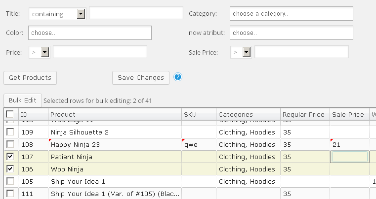
Installing the plugin:
First of all, you need to download the plugin file and unzip it (if you are reading this, you have probably done so already).
Now you need to do one of the following:
-
- In the WordPress administration panel, open the Plugins -> Add new -> Upload page.
- Select and upload the woocommerce-advanced-bulk-edit.zip file (the plugin files on the picture above) and click Activate Plugin.
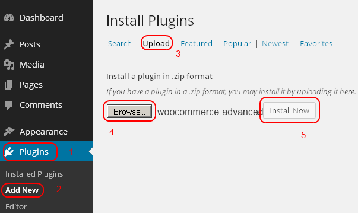
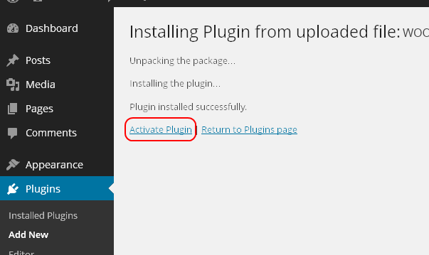
-
- Unzip the woocommerce-advanced-bulk-edit.zip archive into your WordPress plugins folder (located at /wp-content/plugins/).
- Open your browser and go to your WordPress admin panel.
- Open the Plugins -> Installed plugins page and activate the WooCommerce Advanced Bulk Edit plugin.
B) Viewing products - top
The plugin is accessible via Advanced Bulk Edit option of the Products menu.
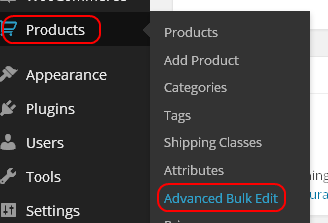
By default no filters are applied and when you click the Get Products button, all of the available products will be loaded into the editor.
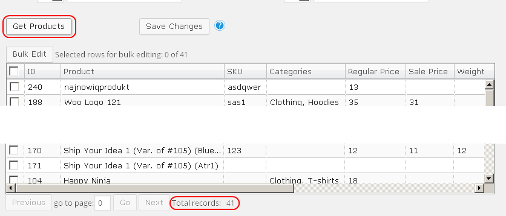
You can easily filter the products by title, regular and sale price, categories, attributes, sku and tags:
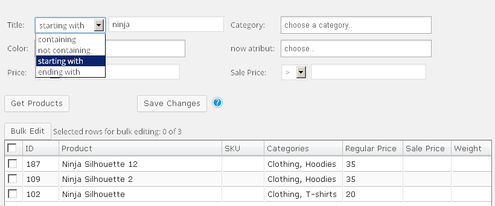
C) Viewing different product fields - top
Be default only part of the available fields are shown in the spreadsheet. To view different ones, click the Show/Hide Fields button at the bottom and choose which columns to display.
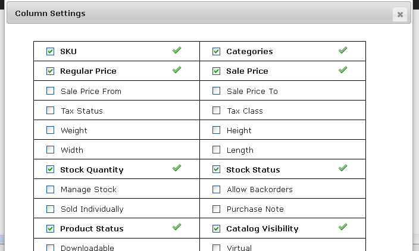
D) Editing products - top
You can edit each product by simply clicking on its fields in the table. Type the new value and simply hit Enter or click on another cell.
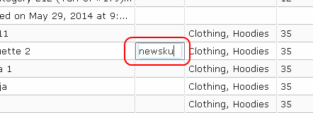
After you've finished editing the field, a red triangle will appear on its top-left corner to indicate that this value has been changed and will be updated in the database.
Note ! Changes are saved via the Save Changes button or when navitaging to a different page of products !
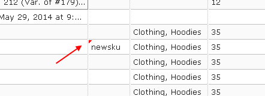
It is easy to revert to the original value of any row. Simply select the row and then click the Selected Rows button (selected rows are the ones with a check mark at their start). Reverting is avalaible for changes prior each save.
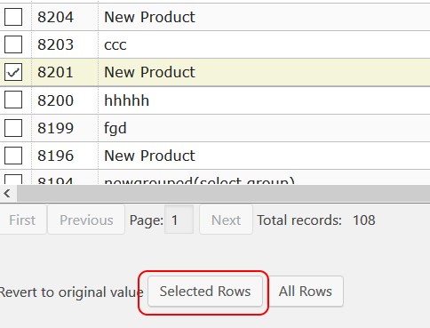
E) Using bulk edit - top
To use the bulk edit functionality you have to select the rows first.
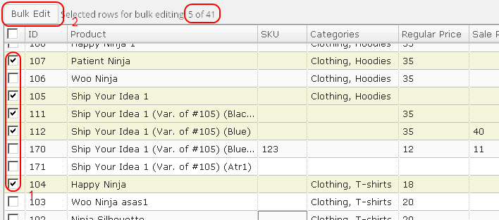
Click the Bulk Edit button to show the edit dialog. Select the appropriate options and type the new values.
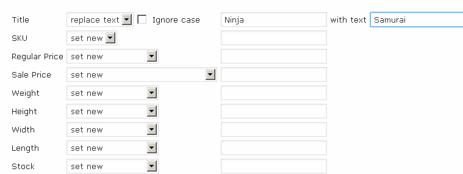
Click OK to confirm the changes.
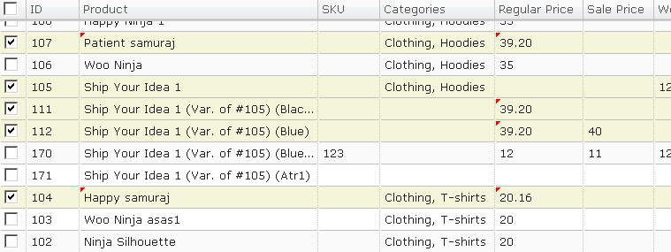
Note! To bulk edit images, select the products first and then click on one of the selected ones.
F) Editing attributes - top
Note! By default all attributes are dinamically retrieved and added as separate columns.They are not visible and must be enabled via the "Show/Hide Fields" button first.
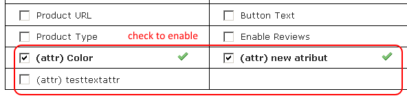
After that editing attributes is like any other taxonomy. Important note about the attribute handling by the plugin:
You can add values directly to variations, the plugin will check the parent if the attribute is visible for variations and will enable it/add it automatically - you don't have to add it to the parent first (if it is currently missing of course).
Note! When you remove all attribute terms of variable products, the parent element has to be edited and saved separately.
G) Deleting products - top
Note! If you delete variations using the default "Move to Trash" option and the parent still exists, the variation will not be deleted. Variations only must be deleted with the "Delete permanently" option selected.
H) Custom fields - top
To enter your cutom fields, click the Custom fields button.
String and number meta fields are self-explanatory. Let’s look at the dropdown select meta field.
Field name would be the field id, and the different options should be entered in the edit field below separated by commas.
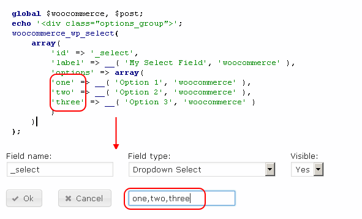
Hierarchical custom taxonomies are category-like - new temrs can not be entered via the plugin, you can only choose existing ones.
Normal custom taxonomies are tags-like - you can choose whether new terms can be inserted via the plugin.
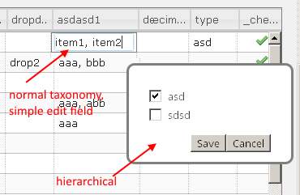
I) Requirements for CSV Update - top
Note! This feature has been deprecated in favor of WooCommerce's own CSV import/export.
You can show it by enabling Debug Mode in the settings.
-
The products that need to be updated should be loaded in the table editor.
-
The csv file should have the same header columns as the one generated on exporting.
-
The csv file MUST be comma-separated.
-
The csv file MUST be UTF-8 encoded.
-
Only text,number and select fields are updated.
G) Change log - top
-
5.1 - 2022-05-03
- New Feature: New custom field type for serialized data to CSV format.
- New Feature: You can now check for plugin updates directly from the plugin's admin page.
- Upgrade: Added "Select All" / "Deselect All" option in attributes selection dialog.
- Upgrade: Hovering product images now display a bigger picture.
- Upgrade: Some more styling applied to areas which were missed on the previous update.
- Fix: Not closing an HTML tag in Description causing a grid misformatting.
- Fix: Conflict with B2B Market plugin.
- Fix: Conflict with Tidio Chat plugin.
- Other small general bug fixes and improvements.
-
5.0 - 2021-07-05
- Refreshed the overall outlook of the plugin with a better design.
- New Feature: When generating variations, add option to set the variation regular price to be the regular price of the parent product.
- New Feature: Split variations to simple products.
- New Feature: Added new custom field type: Html Link
- New Feature: Added auto-complete to Up-sells and Cross-sells fields, so when you type, it will search in ID, Title and SKU fields and display a list of results to choose from.
- New Feature: Added option to make WCABE visible only for Administrator users.
- Upgrade: Filtering by custom fields now filters not only the parent product but the variations as well.
- Fixed: In some cases, filters combination didn't worked.
- Fixed: Conflicts with some 3rd party plugins and themes.
- Other small general bug fixes and improvements.
-
4.6.1 - 2020-10-15
- Fixed: Custom fields search returned no products.
- Fixed: Bulk Edit > Sale Price rounding option of 0.01 is now displayed.
-
4.6 - 2020-09-24
- Update: The Regular Price and Sale Price field filters now accepts more values, including an advanced "filter expression" that allows specifying ranges as well as single prices together. For more info, please check the new info sign located right next to the prices field filters.
- Update: Bulk Edit dialog > Regular Price > increase/decrease by %, added rounding option of 0.01.
- Update: Added an option to turn off the hints, because some 3rb party plugins, using the same library, were causing JS conflicts
- Upgrade: Added Slovenian translation.
- Upgrade: Added Slovak translation.
- Fixed: Bulk Edit dialog > Regular Price > increase by %, removed rounding when 'no-rounding' option is selected.
- As always, other small general bug fixes and improvements.
-
4.5 - 2020-05-08
- Upgrade: Added new custom field type: DateTime. You can now add fields of type DateTime, e.g. format: 2020-05-08 16:40:00.
- Upgrade: Added translations for the new hints.
- Upgrade: Better debug info.
- Upgrade: The variations titles are now fully displayed, instead of shortened like before.
- Upgrade: Hint now show/hide on click, so it will be more user-friendly.
- Update: The plugin menu is now the full name of the plugin: WooCommerce Advanced Bulk Edit.
- Fixed: Invalid check on calling WooCommerce action on save.
- Fixed: On the last date of a sale (Sale End Date) the sale price doesn't show.
- Fixed: JS error on bad formatted attachments upload dir.
- Fixed: Removing products from a group issue.
- Other small general bug fixes and improvements.
-
4.4.4 - 2019-11-29
- Upgrade: The ID field filter now accepts more values, including an advanced "filter expression" that allows specifying ranges as well as single IDs together. For more info, please check the new info sign located right next to the ID field filter.
- Upgrade: The hints lib is now fully replaced with a new more advanced one. This will allow adding of more in-place help info, to help you understand easier the functionality of the plugin. Also added a few more info signs across the plugin.
- Fix: SKU field doesn't escape double comma properly.
- Fix: Tax Class field not getting all values.
- Fix: Select/Deselect Variations button displaying on top drop-down menus.
- Other small general bug fixes and improvements.
-
4.4.3 - 2019-05-21
-
New Feature: added an "unselect vars" button on the variable products to deselect all the variations of a product.
-
Fix: for date fields not displaying date picker.
-
Fix: for an issue with attributes not showing on WooCommerce 3.6+.
-
Fix: for a problem where groups wouldn't load for any products in the list. Thanks to MastersIT for pointing that out.
-
Small general bug fixes and improvements.
-
4.4.2 - 2018-10-05
-
Added Status "pending" to Bulk Edit dialog as it was previously available only in the grid built-in editor for the Status field.
-
Fixed StockStatus not saving in some cases.
-
Fixed not saving the change of Product Type, when option "Use API calls when possible" is enabled.
-
Fixed an issue with the grid where the current grid changes aren't commit when the grid loose focus. For example, if you edit a cell and then click "Save Changes" it does nothing as the grid didn't commit the changes when lost the focus and therefor "Save Changes" doesn't execute.
-
Small general bug fixes.
-
4.4.1 - 2018-05-23
-
"Use API calls when possible" on by default because WordPress 4.9.6 does not save some fields using the regular faster method.
-
4.4 - 2018-05-13
-
Optionally revert tags to text handling.
-
Option to call the new API(woo > v3.0) calls when possible.
-
Bug fixes and improvements.
-
"Convert manually to UTF-8" is now called always and removed from options.
-
4.3.5 - 2018-04-24
-
Easy way to clear applied search filters.
-
Fixed the publish date not getting saved (in 4.3.4).
-
4.3.4 - 2018-02-22
-
Updated the headers declaring WooCommerce support.
-
New distinctive formatting for variations.
-
Moved wp lister action calls in the woocommerce action.
-
Support for the new on backorder stock status.
-
Better compatibility with Prospress subscriptions.
-
4.3 - 2017-12-18
-
Added the new headers declaring WooCommerce support.
-
Function 'Full View' added which expands the table to the maximum available height and hides the other controls.
-
Better sorting of the variations.
-
UTF-8 encoded slugs are now decoded in the table.
-
Fixed a bug for custom fields with unsupported characters.
-
Updated the spanish translation(thanks to Antonio Gutierrez).
-
Now the product update WebHook is triggered.
-
Confirmation dialog when active changes exist and the 'Get Products' button was clicked.
-
4.2.5 - 2017-10-11
-
Support for grouped products for woocommerce >= 3.0.0.
-
Function 'Invert selected' added.
-
Fixed a php warning when the action calls are enabled (woo >= 3.0.0).
-
CSV Update is hidden by default and can be anbled when debug mode is on.
-
Added actions for better compatibility with third-party plugins.
-
Allow backorders is explicitly set to 'not allow' when creating variations.
-
4.2.2 - 2017-05-02
-
Bug fix for woocommerce >= 3.0.0, stock status for variations must not use the new 'product_visibility' taxonomy.
-
4.2.1 - 2017-04-07
-
Quick bug fix for php < 5.4 only, "find custom taxnomies" now skips the built-in woo 3.0 'product_visibility' taxonomy.
-
4.2 - 2017-04-03
-
Update the current product view with a csv file previously exported via the plugin.
-
Support for custom attributes in the selection manager.
-
Added option for renaming the attribute name of custom attributes in the bulk dialog.
-
WPML: product loading now follows the currently selected language.
-
Tags now support all functions of category and attribute editing(hierarchical taxonomy).
-
Custom hierarchical taxonomies now support adding of new terms.
-
Button for automatic discovery of custom fields without a product ID.
-
Copy image file names to other fields in the bulk dialog.
-
Cyrillic and turkish titles now generate nice looking english slugs.
-
Support for WooCommerce 3.0. Due to technical limitations in the latest version, the stock status filter is removed.
-
Dummy jQuery select2 function added to prevent javascript errors from third-party plugins.
-
4.1.1 - 2016-10-26
-
Maintenance update.
-
Support for multiple skus in the search filter(comma separated).
-
Fix: css issue that caused the date picker in sale start/end dates to remain hidden.
-
4.1 - 2016-10-20
-
Support for new categories and attribute terms within the plugin.
-
The bulk variations dialog now supports custom attributes.
-
Added exact option for the title and sku search filters.
-
Updated russian translation.
-
Bug fixes.
-
4.0.4 - 2016-09-23
-
Redesigned bulk variations dialog, variations now show only the selected terms plus "link all variations" support.
-
Revised: new variations create fewer empty keys in the database as in latest woocommerce versions.
-
Bug fixes.
-
4.0.1 - 2016-08-01
-
Maintenance update.
-
Bug fix - html tags were stripped for custom fields on save.
-
Revised: post author now retrieves only administrators, shop managers and vendors, deleted for variations.
-
Revised: new installations now save changes in batches of 50 by default.
-
4.0 - 2016-07-22
-
Name(of the column) support for custom fields.
-
Support for post_author and product_type added as a search filter.
-
Attributes with > 2000 terms are automatically disabled for faster page load and can later be individually enabled. Also attributes with > 100 terms are listed for enable/disable.
-
Deleting is done in batches of 50 to prevent php timeouts.
-
"Delete images from server/media library" option now enhanced to delete images when permanently deleting products.
-
Hovering a variable product generates a link on the right for quick selection of its variations.
-
Better support of RTL languages.
-
Sorting menu order will keep the variations grouped with the parent product.
-
3.9.2 - 2016-05-22
-
Revised: "call woocommerce save action" now off by default, some plugins do not check the POST data and could cause problems.
-
All inputs in the bulk dialog now reset on opening.
-
2 minor bug fixes.
-
Revised: "Show/Hide Fields" now placed at the top.
-
3.9 - 2016-03-05
-
Performance improvements when retrieving products and other under the hood changes.
-
Fill series for SKU(numbers).
-
Replace descriptions via a regular expression in the bulk editor.
-
Select AND or OR when searching with multiple workds for descriptions.
-
Bug fixes.
-
3.8.1 - 2016-08-03
-
Maintenance update.
-
Bug fix - tags did not save in latest update.
-
Bug fix - going to a different page in paginated results failed if unsaved changes existed.
Changed from automatic saving to a confirmation message box.
-
3.8- 2016-03-03
-
Improved performance while adding large number of variations in the dialog.
-
Hitting enter while the focus is on the search fields will initiate product retrieval.
-
You can now stop actions done in batches.
-
Detection of duplicate skus on save plus product duplication now skips skus.
-
New translations.
-
Select duplicate (short)descriptions.
-
The 'link all variations' displays the variation count to be created.
-
Parents of variation now force load in paginated views.
-
Option to export only the visible fields to CSV.
-
Multiline text in custom fields now follow the settings of the descriptions(in quick settings) for their editor.
-
Bug fix:images stored in the main upload directory caused failure of finding their thumbnails for displaing in the editor.
-
Bug fix:deleting table views was not functional.
-
Bug fix:latest version failed to load non-standard tax classes.
-
Compatibility with the taxonomies in the WooCommerce German Market plugin.
-
3.7- 2015-12-29
-
Option to use sql queries when deleting products(the default method in versions < 3.4).
-
8 new search filters.
-
Select items from a group.
-
Copy values from variable products to their variations.
-
Various fixes/tweaks.
-
3.6.2 - 2015-11-09
-
Fix: css conflict from a popular plugin that made the dialogs unusable.
-
Search in the columns dialog/search fitlers.
-
Revised: setting manual height of the search filters is no longer available - redundant after collapse/search filters.
-
Minor fixes/tweaks when creating variations.
-
3.6 - 2015-10-27
-
Variations are now created in batches of 30.
-
Option to skip duplicate variations.
-
Link all variations.
-
Quick actions in the selection dialog - select products/variations, duplicate products/variations.
-
Fix: removing all attribute terms of a variable product did not refresh its meta key.
-
Revised: you need to manually enable the "Used for variations" option before creating variations.
-
Other minor fixes/tweaks.
-
3.5.5 - 2015-09-30
-
Option to save changes in multiple ajax calls to prevent php timeouts.
-
Option to delete images from server/media library.
-
Updated custom attributes support for newer woocommerce versions.
-
Additional information in the image dialog.
-
Improved product gallery images handling.
-
Variation description added.
-
Saving of the filter collapse state on saving changes.
-
3.5 - 2015-09-16
-
Option to use the default table editor when editing descriptions.
-
Show selected products only.
-
Custom attributes improvements - bulk edit and create variations.
-
Paginated products now begin with the newest first.
-
Tweak - decreasing number values that result in less the 0 are now set to 0(the decrease was ignored before).
-
First time users/installs - a hint to use the show/hide button, more default fields.
-
Bug fix - the "Do not retrieve total number" was ignored on default product retrieval.
-
3.4.4 - 2015-08-26
-
3.4.3 - 2015-07-15
-
Fix: Title/descriptions search filters did not work with a single word and contains.
-
Use wordpress editor for description editing.
-
Option to allow editing of every field and bypass the built-in safety net.
-
Show/Hide search filters.
-
Quick Settings area - larger images on hover and bypass image dialog on click.
-
3.4.1 - 2015-07-06
-
Quick bug fix for php < 5.4 only: improper initialization of a php array.
-
3.4 - 2015-07-05
-
Basic support for custom attributes(edit in table only).
-
New options - set search filters height, include all variations on custom taxonomy search.
-
Optimized attribute retrieval\handling to be more ram efficient.
-
Built-in woocommerce fields now support custom translation.
-
Tweak: checking "AND" works for attribute search filters.
-
Bug fix: linked editing did not work for variations in v. 3.3.2.
-
Various minor tweaks and fixes.
-
3.3.2 - 2015-05-28
-
New option to increase row height -> bigger images, text in 2-3 rows.
-
Rounding to 10 and 100 added.
-
Bug fix: could not delete product gallery images in v. 3.3.
-
Tweak: Improved compatibility with third-party themes/plugins.
-
Tweak: Improved compatibility with non-english characters.
-
3.3 - 2015-05-24
-
Save pre-sets of visible table fields.
-
Use multiple search words and regular expressions in the Selection Manager.
-
New option to call the wordpress action save_post.
-
Various fixes.
-
Tweak: Settings dialogs do not wait for the ajax call to finish when saving.
-
Tweak: Automatically resize dialogs in lower resolutions.
-
3.2.5 - 2015-04-26
-
New search filter - shipping class.
-
Added "Uncategorized" for the category search filter.
-
Fix: Ability to set shipping class to none when editing individual items.
-
Fix: Custom taxonomies search filters did not retrieve some terms.
-
Fix: Set skus for variable products instead of their variations only.
-
Tweak: When searching for skus all variations are retrieved if the parent has it.
-
3.2.1 - 2015-04-09
-
Maintenance only - bug fix - id and post title did not appear for fresh installations.
-
3.2 - 2015-04-08
-
Copy field values in the bulk dialog.
-
Rounding when changing decimal numbers by percentage.
-
New search filters - ID, stock quantity/status.
-
Option to set manual table height.
-
Revised design: column ordering is saved.
-
Support for non-standard tax classes.
-
3.1.2 - 2015-03-27
-
Maintenance only - minor bug fixes and improvements.
-
3.1 - 2015-03-20
-
Duplication support.
-
Find custom taxonomies.
-
Spanish translation.
-
Bug fixes and improvements.
-
3.0 - 2015-03-08
-
All custom fields are available for search filters.
-
Improved search in multiple selects.
-
Optionally require confirmation before saving.
-
2.9.7 - 2015-02-20
-
Maintenance only - minor bug fixes and improvements.
-
2.9.5 - 2015-02-08
-
New search filters - long and short description(not visible by default).
-
Bug fix: sometimes attributes not recognized on variation creation.
-
2.9 - 2015-02-05
-
New search filters - sku and tags.
-
Show/hide most of the search filters.
-
New option for better compatibility with third-party cache plugins.
-
2.8.4 - 2015-02-02
-
Improved attribute handling.
-
4 new options added.
-
Minor bug fixes and improvements.
-
2.8 - 2015-01-23
-
Find custom meta fields from third-party plugins.
-
New option added to disable the automatic handling of attributes for variable products.
-
Improved multi-word search.
-
Minor bug fixes and improvements.
K) Sources and Credits - top
Many thanks go out to the following:
Once again, thank you so much for purchasing this plugin. As I said at the beginning, I'd be glad to help you if you have any questions relating to this plugin. No guarantees, but I'll do my best to assist. If you have a more general question relating to the plugin on CodeCanyon, you might consider visiting the forums and asking your question in the "Item Discussion" section.
George Iron
Go To Table of Contents